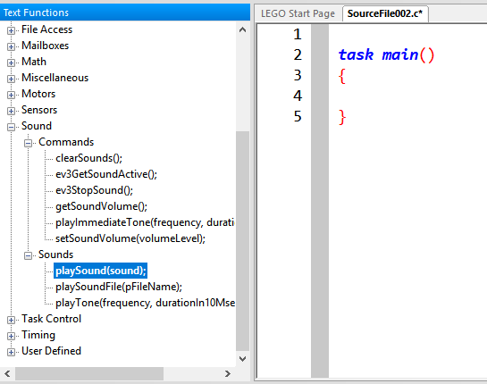

© Fort Street High School Robotics
Beep beep! Tones are very useful for testing purposes. If you are confused at where you are in a piece of code, you can make the robot make a noise, so you have a 'breakpoint'.
To make a noise, use the function:
playTone(500, 100);
This plays a tone at frequency of 500 Hz for 1000 milliseconds (1 second). That second number is the number of 10 milliseconds.
To make different noises, simply change the frequency or time. Try changing 500 to 100, and 900.
You can also play some other patterns:
playSound(soundUpwardTones);
You can do the following sounds. Try them out! * soundBlip * soundBeepBeep * soundDownwardTones * soundUpwardTones * soundLowBuzz * soundFastUpwardTones * soundShortBlip * soundException * soundLowBuzzShort
In RobotC, you should be able to see a section on the left called 'Text Functions'. This panel lets you drag and drop functions into the code. Look for playSound and playTone under 'Sound':

Try dragging functions out from this menu and into the code area.
If you cannot see this panel, go to the top menu and select View > Function Libarry (text).